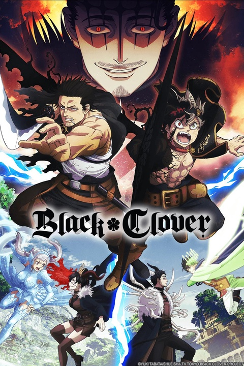

¿De qué trata Black Clover?
Ambientado en un mundo en el que la magia es común entre sus habitantes, Black Clover gira alrededor de Asta: un joven que no tiene habilidad mágica alguna. A pesar de sus límites, Asta anhela convertirse en el Emperador Mago. Este es un objetivo que comparte con Yuno: su rival, hermano y un mago prodigio. Para lograrlo, Asta dedica cada día a entrenar físicamente en un esfuerzo de compensar su ausencia de magia. Sin embargo, todo cambia cuando Asta recibe el grimorio con el trébol de cinco hojas. Este le permite utilizar el poder de la anti-magia.